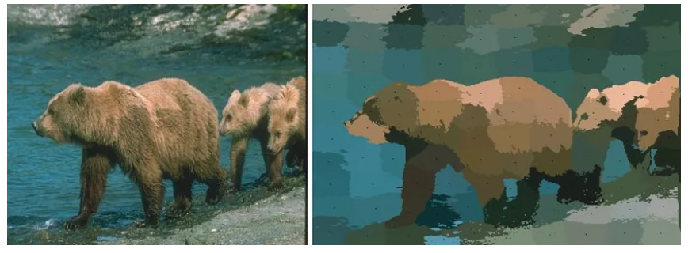

7 Classification II
7.1 Summary
Object-based image analysis (OBIA) groups pixels into meaningful objects like trees, buildings, and water bodies to process remote sensing or earth observation data. Instead of pixel-level analysis, object-level analysis provides more accurate and efficient data interpretation. OBIA includes image segmentation, object classification, and object-based spatial analysis.
Sub-pixel analysis analyses the sub-pixel characteristics of individual pixels to extract more detailed information from remote sensing data. This is useful for analysing satellite imagery, where pixels represent very small areas of the earth’s surface. Sub-pixel analysis uses mathematical algorithms to estimate land cover types in each pixel based on their spectral characteristics.

Error matrix, also known as confusion matrix, compare predicted class labels to test dataset class labels. The matrix rows show actual class labels, while the columns show predicted class labels. The matrix shows the number of samples in each actual and predicted class. The matrix’s main diagonal shows correctly classified samples, while the off-diagonal elements show misclassified samples.
The error matrix calculates overall accuracy, producer accuracy, user accuracy, and F1 score. These metrics quantify classification algorithm accuracy.
Kappa, also known as Cohen’s Kappa, is a statistical measure of class label agreement, such as the predicted and actual class labels in a classification problem. Kappa is a more robust performance measure than overall accuracy because it accounts for chance agreement between the two labels. Kappa ranges from -1 to 1, where a value of 1 indicates perfect agreement between the two sets of labels, and a value of 0 indicates agreement that is no better than chance. Negative Kappa indicates disagreement worse than chance.
Kappa formula:
Kappa = (Po-Pe) / (1 - Pe)
where Po is the observed agreement between the labels and Pe is the expected chance agreement. Assuming the predicted and actual class label distributions are the same, the expected agreement is calculated.
Cross-validation evaluates a machine learning model’s predictive accuracy on a subset of data not used to train it. Splitting the data into two or more subsets for training and testing the model is the basic idea.
Spatial cross-validation accounts for spatial autocorrelation or dependence in spatial data. Spatial autocorrelation means nearby locations in a spatial dataset have similar values or characteristics, which can affect machine learning model performance. A model trained on data from one area of a map may perform poorly when applied to a different area with different spatial patterns.
Spatial cross-validation preserves sample spatial dependence by splitting data into subsets. This is done by dividing the data into spatially contiguous blocks, such as grid cells or polygons, and using one set for training and another for testing. This helps evaluate the model’s ability to generalise to new spatial contexts by evaluating it on data that is spatially distinct from the data used to train it.
7.2 Applications
We can see the application from this paper “Spatial dependence between training and test sets: another pitfall of classification accuracy assessment in remote sensing.” This paper is quite advance because it suggests changing classification accuracy assessment using spatial imagery. Remotely sensed data autocorrelates spatially. Nearby pixels are more alike. Adding spatial or contextual features to the model can improve classification performance. If spatial dependence between training and test sets is ignored, it can overestimate generalisation capabilities. This paper reviews spatial autocorrelation approaches for remote sensing image classification and shows the importance of bias in accuracy metrics when spatial independence between the training and test sets is not respected. We compare three spatial and non-spatial cross-validation strategies at pixel and object levels and examine performance at different sample sizes. Spatial leave-one-out cross-validation is better for unbiased predictive error estimates when mapping two simple forest classes using Sentinel-2 data (Karasiak et al. 2022).
7.3 Reflection
In this week’s module, we were asked in class, “What happens if a classification model does not consider spatial autocorrelation?” If a classification model does not account for spatial autocorrelation, it may produce biassed or inaccurate predictions, especially when dealing with spatial data. This is due to the fact that spatial autocorrelation can produce non-random patterns of variability in data, which violates the assumption of independence that underpins many machine learning algorithms.
When a classification model is applied to spatial data, nearby locations may have similar values or characteristics due to spatial autocorrelation. This means that a model trained on a subset of the data may not generalise well to other spatial locations with different spatial autocorrelation patterns. In other words, the model may not be able to capture the spatially dependent patterns in the data, which can result in errors in classification. Techniques such as spatial statistics and spatial cross-validation can be used to account for spatial dependence between data points and improve prediction accuracy.